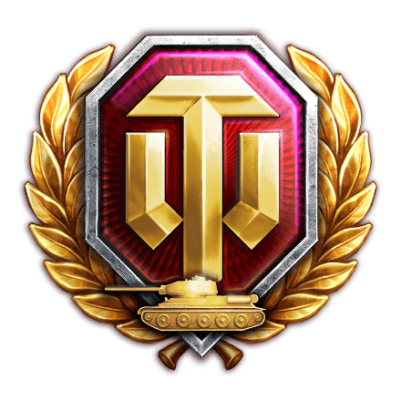
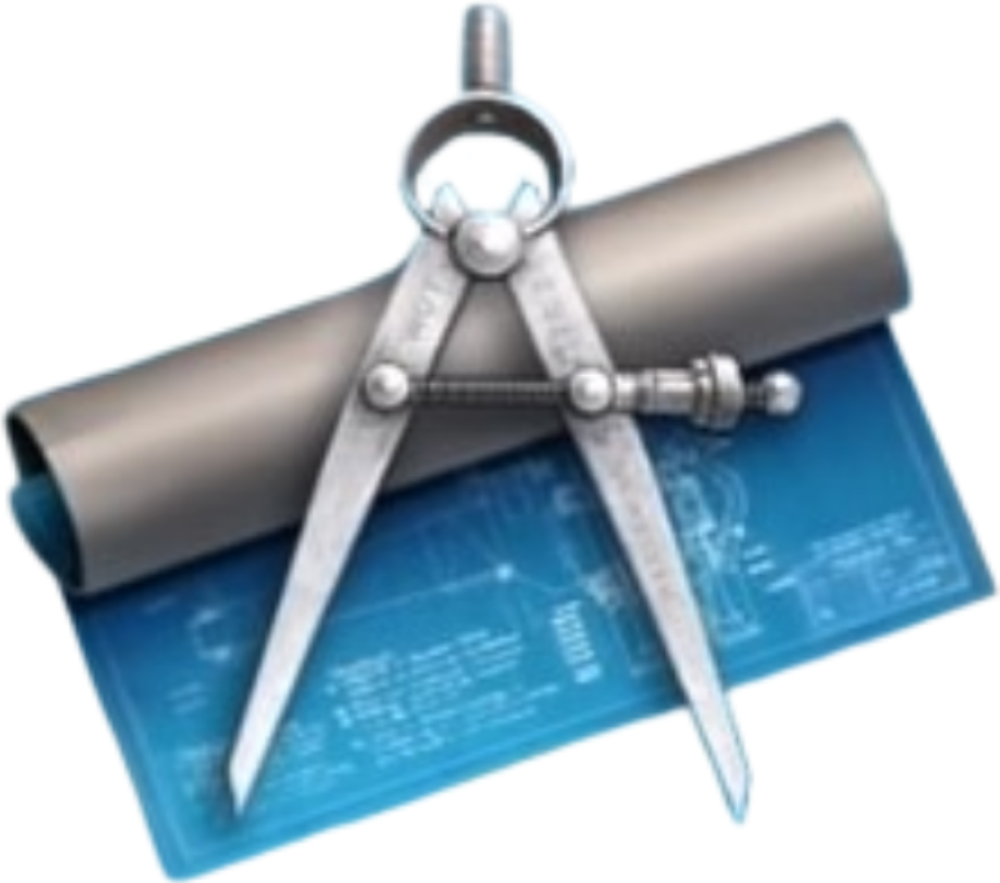
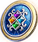

-

Золото - головний ресурс. За його допомогою можно покупати танки, та обмінювати його на інші ресурси. Його можна отримати в спеціальних івентах та в подарунках чи за допомогою преміум аккаунтів. Ще можно розміняти на інщі ресурси.
-

Срібло - використовується на розхідники, такі як покупка єдениць техніки в бій (щоб вийти в бій мало лише мати танки, треба заплатити за кожну єденицю сріблом). В Бойових Пропусках за срібло можно було купити преміум набор. Заробляється в битвах.
-

Преміум аккаунт допомогає гравцю заробляти Золото, дайчи його за гру в боях. Здобувається в івентах.
-

Танки - випадають в івентах. Якщо ви не хочете витрачати срібло на покупку єдениць техніки, ви можете використовувати цей ресурс. Його можно обміняти на золото.
-

Креслення це достатньо новітній ресурс. Якщо зібрати його необхідну кількість, можно обміняти на танк. Використовувалося в "Новорічній Лотереї 2023".
-

Жетон - ресурс який використовувався в "Новорічному аукціоні 2024". За 5 жетонів можно було придбати 0KItMzQg0KXQsNGA0LrRltCy, а за 12 жетонів - 0KItNjQg0JHQnCDQntC/0LvQvtGC. Ресурс можно було забрати раз на годину під час івенту івенту.
-
Модулі
Гармати
 Командири
Командири Камуфляжi
Камуфляжi
-
Механіка
Унікальності
 Валюта
Валюта Рідкі танки
Рідкі танки
-
Інформація
Мапи
 Медалі
Медалі Режими
Режими Гравці
Гравці